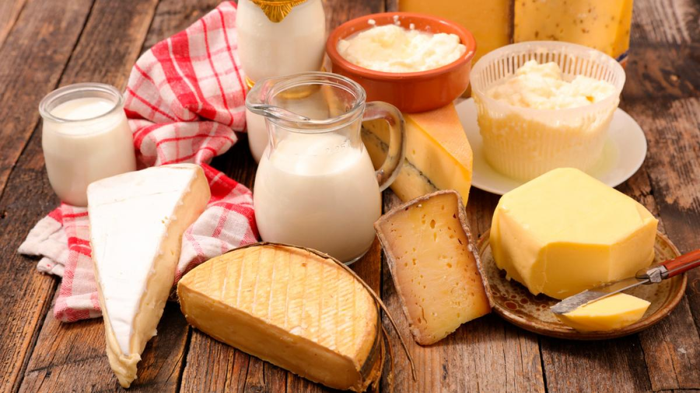

PRODUCTOS ORGANICOS
Se le conocen como orgánicos a los productos vegetales, animales o sus derivados, que se producen con sustancias naturales y sin utilizar plaguicidas ni fertilizantes artificiales, entre otros químicos

PRODUCTOS LACTEOS
El grupo de los lácteos incluye alimentos como la leche y sus derivados procesados

PRODUCTOS NO PERECIBLES
Los alimentos No Perecederos son aquellos alimentos que duran más tiempo y podemos mantener sin necesidad de refrigeración al estar crudos